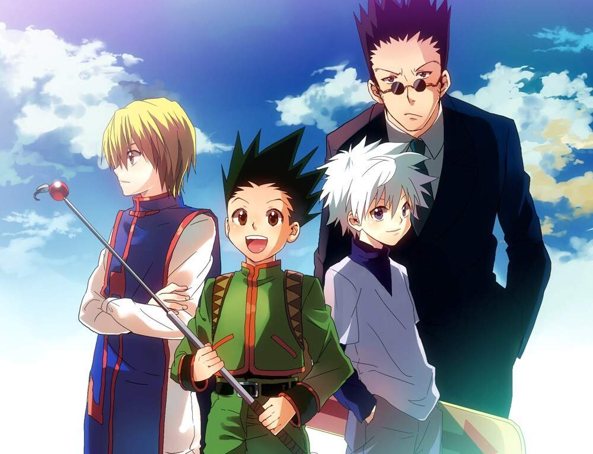

About Gon
Gon Freecss is a kind boy who is looking for his father on the way to pursue his dream of becoming a hunter. He is now just a Rookie Hunter. He has made a lot of friends as well as helped a lot of people through his journey.
Gon Freecss and his friends
Gon's characteristics
- He is always willing to help other people.
- He is so innocent and kind that people sometimes think him a fool.
- He is a strong-willed person but also a short-tempred one when it comes to see people he cares get hurt.